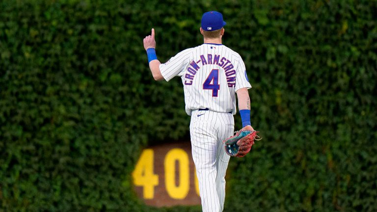

import pandas as pd
import numpy as np
import matplotlib.pyplot as plt
from pybaseball import statcast_batter, cache
import calendar
cache.enable()
PCA_ID = 691718
df = statcast_batter(
"2026-03-20",
"2026-10-05",
PCA_ID
)
# Keep regular-season games only
df = df[df["game_type"] == "R"].copy()
df["game_date"] = pd.to_datetime(df["game_date"])
# Group late March games into April
df["month"] = df["game_date"].dt.month.clip(lower=4)
print(
len(df),
"pitches from",
df["game_date"].min().date(),
"to",
df["game_date"].max().date()
)
CHICAGO, ILLINOIS – JUNE 16: Pete Crow-Armstrong #4 of the Chicago Cubs points toward the field during a matchup against the Colorado Rockies at Wrigley Field on June 16, 2026, in Chicago, Illinois. Photo by Matt Dirksen/Chicago Cubs/Getty Images.
From a Slow Start to an MVP Season
Pete Crow-Armstrong had a season most baseball players can only dream of.
In 2026, the Chicago Cubs center fielder hit 45 home runs, stole 41 bases, drove in 107 runs, and posted a .280/.372/.570 slash line. He became just the seventh player in Major League Baseball history to join the coveted 40/40 club, his 10.6 fWAR led all of baseball, and the historic campaign earned him a unanimous National League Most Valuable Player award.
But just a few months earlier, many Cubs fans were calling for Crow-Armstrong to be benched due to his inconsistency at the plate. His aggressive approach left him vulnerable to pitches outside the strike zone, and his existing swing mechanics weren’t consistently translating his considerable athleticism into productive contact.
Then, something drastic changed.
In May, PCA made a series of adjustments that would fundamentally reshape his season. He narrowed his stance, moved closer to the plate, repositioned his hands, and completely altered his mental approach to his at-bats.
So, how exactly did a hitter who struggled through the opening month of the season become the most valuable player in the National League?
Well, Joey Ran the Stats.
Using Python and Statcast pitch-level data, I wanted to investigate two parts of PCA’s transformation:
- The mental shift: Did he actually become more selective at the plate, and could that change be quantified?
- The mechanical shift: Did his mechanical adjustments translate into better contact quality?
Rather than simply comparing his statistics at the beginning and end of the season, I wanted to examine the individual pitches that make up those statistics. By looking at his swing decisions, pitch locations, and batted-ball outcomes, we can get a much better understanding of what actually changed, and how sustainable this production is.
1. Building the Dataset
Before analyzing anything, I needed the data.
I used the pybaseball library to retrieve Statcast data directly from Baseball Savant. Specifically, I pulled every pitch recorded for Crow-Armstrong throughout the 2026 regular season.
The dataset includes information about each pitch, including its location, velocity, outcome, and the resulting batted-ball measurements.
Retrieving Statcast Data
I started by importing the libraries needed for the analysis and retrieving PCA’s pitch-level data using his MLBAM player ID.
This returned 2,922 pitches, covering March 26 through September 27.
I also grouped the late-March games into April so that the monthly comparisons would be easier to interpret.
With the dataset ready, I could start examining the two major components of PCA’s transformation.
2. The Mental Shift: Becoming a More Selective Hitter
One of the biggest changes in PCA’s approach was his ability to recognize which pitches deserved his aggression.
In 2025, his chase rate was 41.7%, meaning he swung at more than four out of every ten pitches outside the strike zone.
That tendency gave pitchers an easy way to attack him. Rather than challenging him directly, they could expand the strike zone and rely on his willingness to chase.
In May 2026, however, his approach began to change. MLB reported that his strikeout rate dropped from 29.7% in March and April to 21.3% in May. His whiff rate also fell from 29.9% to 23.7%.
I wanted to see whether these improvements were reflected in the actual pitches he chose to swing at.
Defining Swing Decisions
The first step was identifying which pitches resulted in a swing and which resulted in a miss.
Statcast records pitch outcomes through the description column. I created two lists to classify these outcomes.
# All possible swing outcomes
SWINGS = [
"swinging_strike",
"swinging_strike_blocked",
"foul",
"foul_tip",
"hit_into_play",
"foul_bunt",
"missed_bunt"
]
# All possible swing-and-miss outcomes
WHIFFS = [
"swinging_strike",
"swinging_strike_blocked",
"missed_bunt"
]
df["swing"] = df["description"].isin(SWINGS)
df["whiff"] = df["description"].isin(WHIFFS)These Boolean columns allowed me to calculate swing and whiff rates directly from the pitch-level data.
For example, the swing rate is simply the percentage of pitches on which PCA swung. Chase rate is the percentage of pitches outside the strike zone on which he swung.
Finding the Turning Point
I chose May 29 as the dividing point for my before-and-after analysis.
turnaround = "2026-05-29"
before = df[df["game_date"] < turnaround]
after = df[df["game_date"] >= turnaround]This gave me two samples:
- Before: 892 pitches
- After: 2,030 pitches
I then calculated the swing rate, chase rate, and whiff rate for each period.
for name, data in [("Before", before), ("After", after)]:
out_of_zone = data[data["zone"] >= 11]
print(name)
print(
"Swing rate:",
round(data["swing"].mean(), 3)
)
print(
"Chase rate:",
round(out_of_zone["swing"].mean(), 3)
)
print(
"Whiff rate:",
round(
data["whiff"].sum() / data["swing"].sum(),
3
)
)The results were particularly interesting.
| Metric | Before | After | Change |
|---|---|---|---|
| Swing Rate | 52.6% | 48.3% | -4.3 pp |
| Chase Rate | 39.3% | 32.0% | -7.3 pp |
| Whiff Rate | 25.6% | 23.5% | -2.1 pp |
[INSERT GRAPH 1: Before vs. After Swing Rate and Chase Rate]
Figure 1. Changes in Crow-Armstrong’s swing decisions before and after May 29.
The most important number is his chase rate.
After May 29, PCA chased pitches outside the strike zone just 32.0% of the time, compared with 39.3% beforehand.
But his overall swing rate also declined, which raises an important question: Was he simply becoming more passive?
To answer that, I needed to distinguish between pitches inside and outside the strike zone.
results = []
periods = [
("Before turnaround", before),
("After turnaround", after)
]
for name, data in periods:
in_zone = data[data["zone"].between(1, 9)]
out_zone = data[data["zone"].between(11, 14)]
total_swings = data["swing"].sum()
results.append({
"Period": name,
"Pitches": len(data),
"Swings": int(total_swings),
"Swing Rate (%)":
data["swing"].mean() * 100,
"In-Zone Swing Rate (%)":
in_zone["swing"].mean() * 100,
"Chase Rate (%)":
out_zone["swing"].mean() * 100,
"Swings Inside Zone (%)":
in_zone["swing"].sum() / total_swings * 100
})
swing_comparison = (
pd.DataFrame(results)
.set_index("Period")
)
swing_comparison.round(1)This produced an even more revealing comparison.
| Metric | Before | After |
|---|---|---|
| In-Zone Swing Rate | 69.1% | 68.4% |
| Swings Inside Zone | 59.5% | 64.7% |
PCA’s in-zone swing rate barely changed.
He was still attacking roughly the same proportion of strikes. The difference was that he was becoming much less willing to chase pitches outside the zone.
In other words, he wasn’t becoming a passive hitter. He was becoming a more selective aggressive hitter.
Visualizing His Swing Decisions
Percentages are useful, but they don’t necessarily tell the entire story. I also wanted to see where PCA was actually swinging.
Using Statcast’s plate_x and plate_z variables, I plotted the horizontal and vertical locations of every pitch he saw. I separated pitches he swung at from pitches he took, then created two plots to compare the periods.
from matplotlib.patches import Rectangle
fig, axes = plt.subplots(1, 2, figsize=(13, 6))
periods = [
("Before turnaround", before),
("After turnaround", after)
]
for ax, (title, data) in zip(axes, periods):
taken = data[data["swing"] == False]
ax.scatter(
taken["plate_x"],
taken["plate_z"],
color="#F28E2B",
alpha=0.3,
s=12,
label="Take"
)
swung = data[data["swing"] == True]
ax.scatter(
swung["plate_x"],
swung["plate_z"],
color="#0E3386",
alpha=0.4,
s=12,
label="Swing"
)
zone = Rectangle(
(-0.83, 1.5),
1.66,
2,
fill=False,
edgecolor="black",
linewidth=2
)
ax.add_patch(zone)
ax.set_xlim(-2, 2)
ax.set_ylim(0, 5)
ax.set_title(title)
ax.set_xlabel("Horizontal Location (ft)")
ax.set_ylabel("Vertical Location (ft)")
ax.legend(frameon=False)
fig.suptitle(
"Where Did PCA Choose to Swing?",
fontsize=16,
fontweight="bold"
)
plt.tight_layout()
plt.show()[INSERT GRAPH 2: PCA Pitch-Location Scatterplots]
Figure 2. Pitch locations where Crow-Armstrong swung and took pitches before and after May 29.
The visualization provides a more direct look at the change in his approach.
Rather than just seeing a lower chase rate, we can examine the distribution of pitches he chose to attack.
The distinction is important because PCA wasn’t necessarily trying to swing at fewer pitches. He was trying to swing at better pitches.
3. The Mechanical Shift: Turning Better Decisions Into Better Contact
While PCA was changing his approach at the plate, he was also making substantial mechanical adjustments.
As reported by The Wall Street Journal in September, the overhaul included several changes to his starting position:
- Narrower stance: Reduced the distance between his feet from approximately 31.5 inches to 18–19 inches.
- Box positioning: Moved closer to the plate and deeper into the batter’s box, adopting a more upright stance.
- Hand position: Lowered his hands from shoulder level to below his chest, near his belt.
- Bat angle: Raised the bat to a more upright position, creating a shorter, more direct path to the ball.
- Stride and leg kick: Reintroduced a more deliberate stride and leg kick, which became more pronounced into June.
[INSERT GRAPH 3: Before and After Batting Stance Images]
Figure 3. Crow-Armstrong’s mechanical adjustments throughout the season.
The adjustments were intended to give him a more controlled starting position and help him consistently get into positions where he could drive the baseball.
But did the changes actually translate into better contact?
I wanted to investigate this using two metrics: exit velocity and barrel rate.
Measuring Contact Quality
Exit velocity measures how hard a baseball is hit. Barrel rate measures how frequently a hitter produces contact with an especially productive combination of exit velocity and launch angle.
Together, they provide a useful way to examine whether PCA was simply making more contact or actually hitting the ball more effectively.
I started by comparing his batted-ball data before and after May 29.
before_ev = before["launch_speed"].dropna()
after_ev = after["launch_speed"].dropna()
print(
"Before:",
round(before_ev.mean(), 2)
)
print(
"After:",
round(after_ev.mean(), 2)
)
for name, data in [
("Before", before),
("After", after)
]:
batted_balls = data[
data["launch_speed"].notna()
]
barrel_rate = (
batted_balls["launch_speed_angle"] == 6
).mean()
print(
name,
"Barrel Rate:",
round(barrel_rate, 3)
)The results:
| Metric | Before | After | Change |
|---|---|---|---|
| Average Exit Velocity | 83.48 mph | 84.07 mph | +0.59 mph |
| Barrel Rate | 4.2% | 6.8% | +2.6 pp |
The increase in average exit velocity was relatively modest, but the improvement in barrel rate was more substantial.
This suggests that PCA wasn’t necessarily hitting the ball dramatically harder. Instead, he was producing a greater proportion of high-quality contact.
To visualize the distribution of his exit velocities, I created a violin plot comparing the two periods.
fig, ax = plt.subplots(figsize=(9, 5.5))
parts = ax.violinplot(
[before_ev, after_ev],
positions=[1, 2],
widths=0.7,
showmeans=True,
showmedians=True,
showextrema=False
)
colors = ["#4C78A8", "#F28E2B"]
for body, color in zip(parts["bodies"], colors):
body.set_facecolor(color)
body.set_edgecolor(color)
body.set_alpha(0.65)
parts["cmeans"].set_color("black")
parts["cmeans"].set_linewidth(2)
parts["cmedians"].set_color("white")
parts["cmedians"].set_linewidth(2)
for x, data in zip([1, 2], [before_ev, after_ev]):
avg = data.mean()
ax.text(
x,
avg + 3,
f"Average: {avg:.1f} mph",
ha="center",
fontsize=10,
fontweight="bold"
)
ax.set_xticks([1, 2])
ax.set_xticklabels([
f"Before\n(n={len(before_ev)})",
f"After\n(n={len(after_ev)})"
])
ax.set_title(
"Pete Crow-Armstrong's Exit Velocity",
fontsize=16,
fontweight="bold",
pad=18
)
ax.set_ylabel("Exit Velocity (mph)")
ax.grid(axis="y", alpha=0.2)
ax.spines["top"].set_visible(False)
ax.spines["right"].set_visible(False)
plt.tight_layout()
plt.show()[INSERT GRAPH 4: Exit Velocity Violin Plot]
Figure 4. Distribution of Crow-Armstrong’s exit velocities before and after the turnaround. Black lines indicate means; white lines indicate medians.
The distribution is just as important as the average.
A small increase in average exit velocity doesn’t necessarily mean a hitter has fundamentally changed his contact quality. However, when combined with a higher barrel rate, it provides stronger evidence that PCA was producing more productive contact.
4. Tracking the Transformation Month by Month
The before-and-after comparison provides a useful snapshot, but it doesn’t capture the entire progression.
I also wanted to understand how PCA’s performance evolved throughout the season.
For this, I calculated monthly wOBA, xwOBA, chase rate, whiff rate, average exit velocity, and barrel rate.
Building the Monthly Metrics
Using the swing and whiff columns created earlier, I wrote a function to summarize the relevant statistics for each month.
def summarize(month_data):
pa = month_data[
month_data["woba_denom"] == 1
]
xwoba = pa[
"estimated_woba_using_speedangle"
].fillna(pa["woba_value"])
out_of_zone = month_data[
month_data["zone"] >= 11
]
batted = month_data[
month_data["launch_speed"].notna()
]
return pd.Series({
"PA": len(pa),
"wOBA": pa["woba_value"].mean(),
"xwOBA": xwoba.mean(),
"chase_rate": out_of_zone["swing"].mean(),
"whiff_rate": (
month_data["whiff"].sum()
/ month_data["swing"].sum()
),
"avg_EV": batted["launch_speed"].mean(),
"barrel_rate": (
batted["launch_speed_angle"] == 6
).mean()
})
monthly = (
df.groupby("month")
.apply(summarize)
.round(3)
)
monthly.index = [
calendar.month_abbr[m]
for m in monthly.index
]
monthlyThe resulting data shows a particularly interesting progression.
| Month | wOBA | xwOBA | Chase Rate | Barrel Rate |
|---|---|---|---|---|
| April | .296 | .286 | 45.8% | 3.5% |
| May | .342 | .404 | 30.7% | 6.2% |
| June | .513 | .399 | 33.4% | 6.2% |
| July | .427 | .361 | 27.2% | 6.4% |
| August | .440 | .396 | 33.2% | 7.7% |
| September | .380 | .400 | 35.1% | 5.9% |
[INSERT GRAPH 5: Monthly wOBA, xwOBA, Chase Rate, and Barrel Rate]
Figure 5. Monthly progression of Crow-Armstrong’s offensive production and underlying metrics.
April was clearly the low point. PCA posted a .296 wOBA and chased 45.8% of pitches outside the strike zone.
By May, his chase rate had fallen to 30.7%, while his xwOBA jumped to .404.
June was the offensive explosion. His actual wOBA reached .513, although his xwOBA remained lower at .399. This distinction is important because it shows that actual production and underlying contact quality don’t always move together.
July brought his lowest monthly chase rate of the season at 27.2%.
August was particularly interesting from a contact-quality perspective. His barrel rate reached 7.7%, the highest monthly figure in the dataset.
By September, his actual production had cooled, but his .400 xwOBA remained strong.
The overall progression suggests that PCA’s transformation was more than a brief hot streak. His approach improved substantially, and his quality of contact remained elevated throughout the summer.
5. Putting It All Together
PCA’s 2026 season wasn’t simply a story of a talented player getting hot.
It was a story of two complementary adjustments.
First, he changed how he approached hitting. His chase rate declined by 7.3 percentage points after May 29, while his in-zone swing rate remained virtually unchanged. He wasn’t sacrificing aggression; he was becoming more selective about where he directed it.
Second, he changed how he prepared to swing. His narrower stance, adjusted hand position, and more deliberate stride gave him a different starting point from which to attack pitches.
The data reflects both changes.
His barrel rate increased from 4.2% before the turnaround to 6.8% afterward. His average exit velocity also increased, albeit modestly, from 83.48 to 84.07 mph.
Neither adjustment alone fully explains his offensive explosion. But together, they provide a compelling picture of how PCA developed into a more complete hitter.
By the end of September, Crow-Armstrong had accumulated 45 home runs, 41 stolen bases, and 10.6 fWAR.
He had become the seventh player in MLB history to join the 40/40 club, and the National League’s Most Valuable Player.
Perhaps the most impressive part of his season wasn’t the raw power or the stolen bases. It was the willingness to fundamentally rethink how he approached the game.
He didn’t stop being aggressive. He learned when to be aggressive.
And sometimes, that’s the difference between a good hitter and an MVP.
Sources & Methodology
Data Sources
- Baseball Savant — Statcast pitch-level data.
- MLB.com — Why Pete Crow-Armstrong’s red-hot May is sign of more — May performance and approach changes.
- The Wall Street Journal — The Risky Mechanical Overhaul That Built a Baseball MVP — Mechanical adjustments.
- Baseball Savant — Pete Crow-Armstrong — Player Statcast profile.
Methodology
- Player: Pete Crow-Armstrong
- MLBAM ID: 691718
- Season: 2026 regular season
- Sample: 2,922 pitches
- Date range: March 26 – September 27, 2026
- Data retrieval:
pybaseball - Analysis: Python, pandas, NumPy, and Matplotlib
The before-and-after comparison uses May 29, 2026, as its dividing point. The monthly statistics are calculated from the same pitch-level dataset.
The comparisons are descriptive rather than causal. The timing of the statistical changes overlaps with the reported mechanical and approach adjustments, but the analysis cannot independently establish that either adjustment caused the improvement.
A Note on the Metrics
- Chase Rate: Percentage of pitches outside the strike zone at which the hitter swings.
- In-Zone Swing Rate: Percentage of pitches inside the strike zone at which the hitter swings.
- Whiff Rate: Percentage of swings that result in a swing and miss.
- wOBA: Weighted On-Base Average, measuring offensive production by assigning different values to different outcomes.
- xwOBA: Expected Weighted On-Base Average, estimating offensive production based primarily on quality of contact.
- Exit Velocity: Speed of the baseball immediately after contact.
- Barrel Rate: Percentage of batted balls classified as barrels by Statcast.
Joey Ran the Stats explores baseball through data, statistics, and quantitative analysis. The code and analysis accompanying this article are available on GitHub.